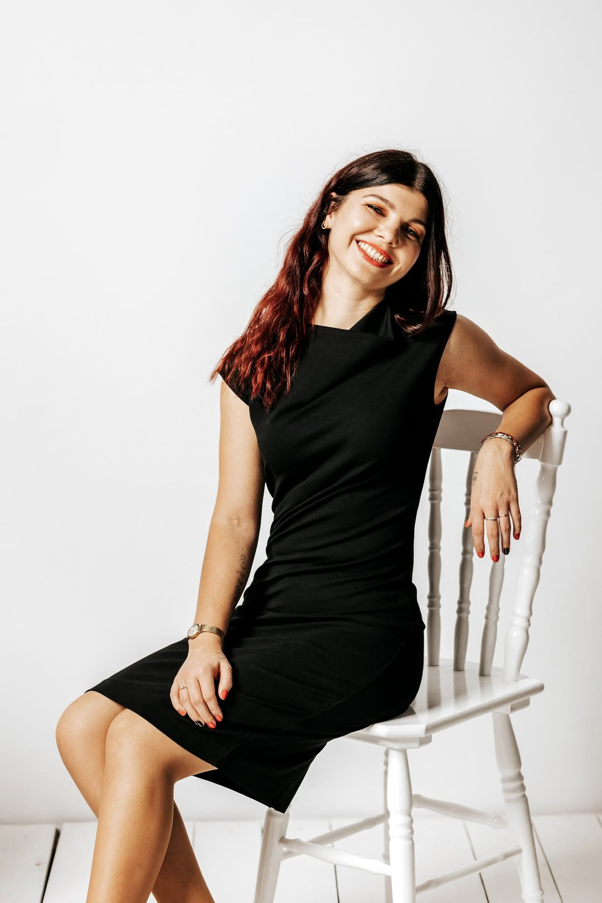

O mnie
Dominika — magister fizjoterapii

Cześć, dzień dobry! 🙂
Ostatnio pojawiło się tutaj sporo nowych osób, więc postanowiłam krótko się przedstawić. Dla stałych bywalców będzie to szybkie przypomnienie 😉
Nazywam się Dominika i jestem magistrem fizjoterapii. Studia skończyłam na AWF w Poznaniu. Od tego czasu stale podnoszę swoje kwalifikacje, zdobywam nową wiedzę i doświadczenie na różnych kursach i studiach podyplomowych 😁
W swojej pracy skupiam się głównie na fizjoterapii ortopedycznej, w której łączę techniki manualnej pracy z ciałem, z mechanicznym drenażem limfatycznym, a także wykorzystuję sprzęt Hi-Top (prądy średniej częstotliwości), aby uzyskać jak najlepsze efekty terapii 😊
Kolejnym aspektem mojej pracy jest fizjoterapia estetyczna (PhysioKobido), gdzie terapią objęte jest całe ciało, głowa i twarz. Dzięki temu efekty widoczne są zarówno w ciele, jako poprawa sylwetki, zmniejszenie dolegliwości bólowych i napięcia mięśniowego, ale także na twarzy w postaci zmniejszenia asymetrii, poprawy krążenia i redukcji obrzęków, ale także jako naturalny lifting 💜
Do każdego pacjenta i jego problemów z ciałem podchodzę indywidualnie i holistycznie, nie działam tylko w miejscu "bólu" 😉 Celem mojej pracy jest, aby pomóc każdemu, kto do mnie przychodzi i aby każdy z Was czuł się zawsze wysłuchany, zrozumiany i zaopiekowany 😊💜
Studia i kursy
- 🌸 AWF Poznań - magister fizjoterapii
- 🌸 Technik masażysta
- 🌸 Terapia manualna tkanek miękkich - studia podyplomowe
- 🌸 Terapia wisceralna - kurs
- 🌸 Zarządzanie ochroną zdrowia – menedżer ochrony zdrowia - studia podyplomowe
- 🌸 Balkefors Orthopaedics System - kurs wkładek ortopedycznych
- 🌸 Medycyna Ortopedyczna wg Cyriax'a - Międzynarodowy Terapeuta OMI Cyriax
- 🌸 PhysioKOBIDO - kurs fizjoterapii estetycznej
- 🌸 Terapia blizn
- 🌸 Bodyshaping - kurs holistycznej terapii modelującej ciało
- 🌸 Terapia nerwu błędnego - równowaga psychofizyczna
Kontakt
☎️ 664 465 302
🏠 Aleja Zdobywców Wału Pomorskiego 2/1